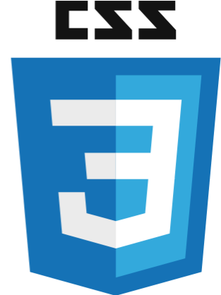

I Specialize In
HTML, CSS, JavaScript, php, as well as creating digital masterpieces and design layouts for websites and mobile applications


HTML, CSS, JavaScript, php, as well as creating digital masterpieces and design layouts for websites and mobile applications
Lets Talk
All of my work is designed for a specific purpose that it is intended to fulfill. Once I know the reason why my services are needed, I then create a step by step process to ensure an end result that is effective in causing the desired effect that my clients want to have.
Communication is the key here, if you are seeking my help it is understood that you need is somebody who will listen to what have to say. I can garantee that i will have ears that will take your words and get started buiding out your vision. In this setp we will both reveal what result you are expecting to get together.
This is the dawing board step in creating your project. Here is where we will design peices of the project.
The pecies of your project have been fully built and will now be but together somewhat like a puzzel. Testing will be done to ensure that that the build is clean with no bugs.
Now the project is complete, and will be released to you for testing, interaction, and appoval.